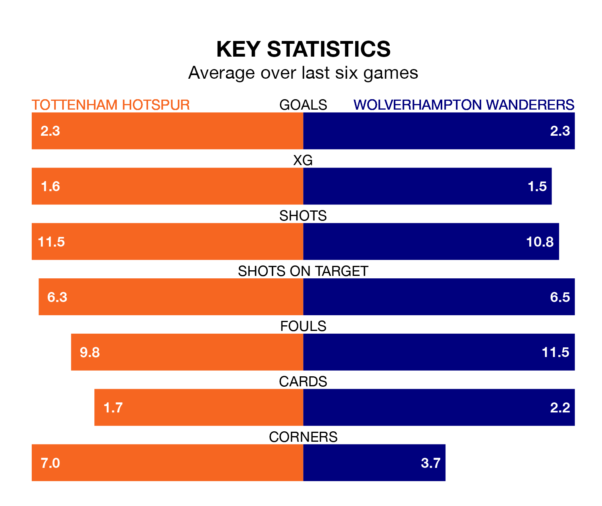

Tottenham Hotspur are heavy favourites to keep all three points at home in Saturday's kick-off against Wolverhampton Wanderers.
Spurs, who sit fourth in the Premier League with 24 games played, are priced at 1.6 to seal victory at the Tottenham Hotspur Stadium.
Sitting seven places and 15 points behind them in the table, Wolves are 5.0 to win with *Betting Company*, while the draw is at 4.6.
With 51 goals in 24 games so far this season, Spurs are scoring more than average in the league with 2.1 goals per game. And they are conceding fewer than average, letting in 36 goals at a rate of 1.5 per game.
Wolves, meanwhile, are below average scorers, with 1.5 goals per game, compared to a league average of 1.6. They have conceded 1.6 goals per game.
In the last 10 years, Spurs and Wolves have played each other on 12 occasions. They won five each, and they drew twice.
On average, Spurs scored 1.3 goals and Wolves 1.4 in those matches.
Their last meeting was on November 11, when Wolves won 2-1 at home.
In Heung-Min Son, Tottenham have one of the league's sharpest shooters so far this season. He has notched 12 goals in 21 appearances, to sit fourth in the scoring charts.
His goal rate of one every 144 minutes is slightly quicker than that of Hee-Chan Hwang, the away side's top scorer with a goal every 145 minutes, and a total of 10 goals in 20 games.
The hosts are in reasonable form in the Premier League, with three wins and two draws from their last six games.
With three wins and a draw over that period, Wolves's form is slightly worse – they have taken 10 points from 18, compared to Spurs's 11.
Spurs's last match was on February 10, a 2-1 win against Brighton and Hove Albion, with Pape Matar Sarr getting the goals for Spurs.
Wolves lost 2-0 against Brentford last time out, also on February 10.
Saturday's match will be refereed by Anthony Taylor, who has taken charge of 18 Premier League games so far this season, issuing three red cards and booking 94 players. He has awarded 10 penalties.
The last Spurs game Taylor refereed was a 2-0 home win against Fulham on October 23. His last Wolves match was their 2-2 draw at home against Newcastle United on October 28.
Updated: 13:04 (UTC), 16/02/24